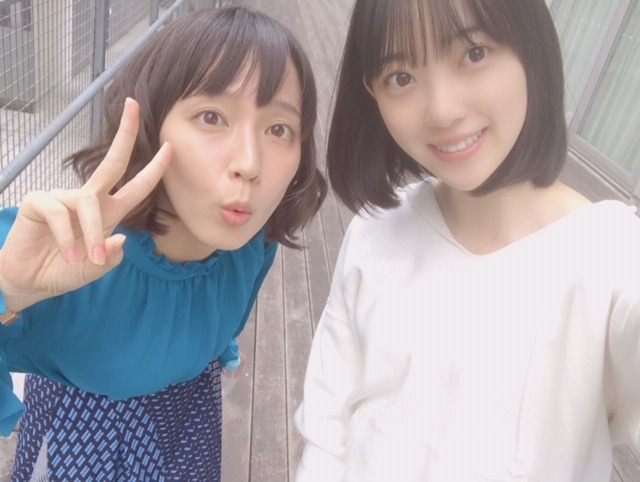
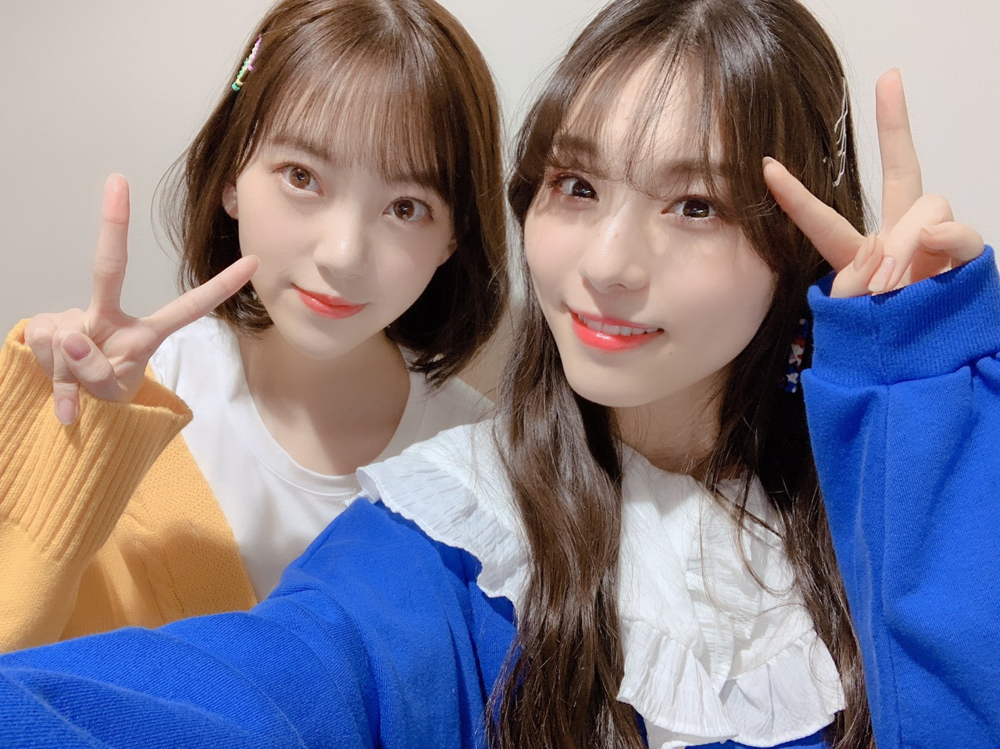
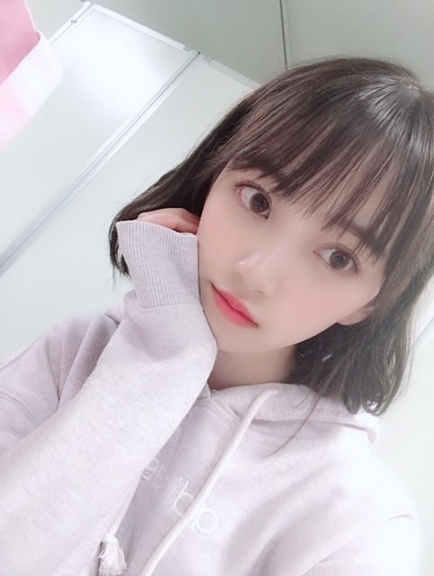

2019/0331Sun目玉焼き食べたくなるよね
ホットギミック オフショット〜✨
以前から憧れていて大好きな吉岡里帆さんと♪

2人だけで撮影させていただいたシーンもあり、緊張しましたが合間にお話しをしたり、笑顔が本当に可愛くて優しくて益々大好きになりました☺︎
また御一緒できるように私も頑張ります！
公式Twitter
公式Instagram
開設されました！
フォローよろしくです☺︎
そしてTGCありがとうございました〜！
歓声も凄く嬉しくてステージからうちわやボードもたくさん見えました✨✨
SONYUNARAさんの洋服、ポップで可愛かった〜
TWICEさんの東京ドームライブを前日に観に行っていたのもありステージ曲がTWICEさんだったので更にノリノリるんるんでした♪
(TWICEさんのライブ衣装ずっと可愛かった...)

久しぶりに伊織に会いました！！わ〜い
一緒のステージ立てて嬉しかったな！
メイクは今回も自分でしました〜
テーマは春オレンジなオルチャンメイク♡
(裏テーマは、ひよこさん)
まず肌は愛用ファンデーション...ipsaファウンデイションアルティメイトでマットに仕上げます
眉毛はペンシルで並行太眉に描いてからKATEの3DアイブロウカラーLB-2を塗ります(明るめ眉がかわいい)
そしてアイメイク
シャドウはとにかくラメ！！！
最近ライブとかで付けてるラメ感が最高なアイシャドウ...ホリカホリカ ピースマッチングシャドウFBE01
をまぶたの二重幅全体に指で塗ります
最近はグリッターラメが気になっています♡
ミナちゃんの東京ドームライブ1日目のピンクラメまぶたがお人形さんすぎてかわいすぎて...
マスカラは茶色で下まつげもしっかり塗ります
目尻の三角ゾーンにはDIORバックステージアイパレット001ウォームのMATTE OCHRE(1番下列の真ん中の色)を小さい筆で塗ります
その流れでうすーく涙袋ゾーンにも同じ色を塗って目の縦幅を広げます
チークはイニスフリーの18番です！
ラメ入りオレンジが日本人にも肌馴染みが良くてCLINIQUEとCHICCAのチークもお気に入りだけど最近はイニスフリーも使ってます☺︎
唇はSUQQUのモイスチャーリッチリップスティック07を塗った上からRMKリップジェリーグロス04をたっぷり塗って完成！
お仕事でもオフの日でもその日の服や髪型、天気、ブーム、気分でメイクを変えるのがすきです☺︎
女の子を目一杯楽しみたいし、おばあちゃんになっても日々"可愛くなる！"ことに貪欲に生きていくのがマイルールです✨
握手会やコメントでメイクについての質問をよくいただくのでいつか写真集やフォトブックを出させていただける時がありましたら色んな日のメイクやヘアアレンジをもっと詳しく紹介できたらいいなぁ〜

ではははは
2019/03/31 20:00


コメント(366)
お店行ったら買えるのかな？
更新ありがとう
憧れの吉岡里帆さんと共演なんてすごいじゃん。
映画の公開が楽しみだなあ。
TGCお疲れ様！
メイクとかよくわからないけど、可愛さへの貪欲さが未央奈らしくていいね。
未央奈が女の子に生まれたことを楽しんで、ずっと可愛くいてくれたらファンとしても嬉しい。
チャァオ～～!☆彡
みおちゃん、こんにちは～～～⤴️⤴️❕❤️❤️❤️❤️❤️笑顔
昨日の握手会お疲れ様でした～～⤴️⤴️❕❤️❤️❤️❤️❤️笑顔
おいら今日代休で、頭痛風邪したまま朝イチに会社の健康診断に行ってきました～～⤴️⤴️❕
勿論きのうの晩御飯軽めにして、今日の朝御飯はとってはいけないのでぇ～～⤴️⤴️
空腹で、ブログ題名「目玉焼き」に反応し～～⤴️⤴️
ヒヨコにも反応し～～～⤴️⤴️
その黄色い衣装が、だんだん卵たっぷりのシフォンケーキに見えてきました～～⤴️⤴️❕❤️❤️❤️❤️❤️笑顔
みおちゃん❕・・・
腹へった❕❤️❤️❤️❤️❤️笑顔
☆大人しい、おすまし！より☆彡
新年度も乃木坂４６のますますのご活躍を願っていますよ❤️❤️❤️❤️❤️❤️❤️❤️❤️❤️❤️❤️❤️❤️❤️
そして来る５月２９日には、新曲も発売されるそうですね❤️❤️❤️ ❤️❤️❤️❤️❤️❤️❤️❤️❤️
未央奈さんが、今度はセンターに！！との憶測がありますけど‥ 是非そうなって欲しいですね☆彡☆彡 ＼(^o^)／
未央奈さん！吉岡里帆さんとの２ショット！ 本当にお綺麗〜❤️❤️❤️❤️❤️❤️❤️❤️ですよ！ (o^^o)
映画！楽しみにしています！！
じゃあ、未央奈さん！今夜も元気でね❤️❤️❤️❤️ 桜が、綺麗で羨ましいですね‥泣 未央奈さん！風邪ひかないでね❤️❤️❤️❤️❤️❤️❤️❤️❤️❤️❤️❤️❤️❤️❤️ ( ´ ▽ ` )ﾉ
楽しみにしているよ。
春本番の季節だけれど、寒い日もあるから体調崩さない様に気をつけましょう。
吉岡さんもとってもお綺麗ですね～♪
TGCのステージ曲もアゲアゲでしたねー！
伊織ちゃんの姿も見られて気分上昇です◎
オルチャンメイクもとても眩しかったから、
目玉焼きよりは、ひよこちゃんみたいです♡
このカワイイ髪型もとっても気に入ったし、
萌え袖している写真にも更に萌えました～♡
今回のTGCでも最高に可愛いらしかったし、
最近の未央ちゃんはとっても神ってますね☆
女の子を楽しんでるのがとても伝わります☺
なんかほんまに仲良い二期生大好き！♡
ほんまにメイクとか参考になる！丁寧に教えてくれてありがとうね〜
イベント続きでお疲れ様！ゆっくり休んでね〜
れに
まずは大阪全握！初めて堀ちゃんに会えて本当に嬉しかった。
想像していたよりも堀さんは小さくて、華奢で綺麗だったなぁ。今回は１回しか握手できなくて堀さんに100%を伝えられなかったんだけど、今度はちゃんと握手したいな〜
伝えられなかったことを言わせてください！堀さん大好きです。いつもいつもありがとう。
今日から1ヶ月後の幕張個握まで自分のキャリアだけに全力で向き合う覚悟を決めました。なかなか、ブログや755のコメントもしなくなるだけでなく見ることもできなくなると思います。堀推し失格ですね。笑 ですが、ほんの少しだけでもいいので、応援しててくれたら幸せです。頑張りますよ。また、堀さんを精一杯応援するために。堀さんの全力で活動してる姿、ほして笑顔を見るために。これからもずっと愛してます。いつもありがとう。
昨日久しぶりに握手出来て良かった〜
4回しかループ出来なかったけど次のシングル絶対個握取るから！！笑
未央奈をはやく拝みたい〜
京セラドームの別れ際からの嫉妬の権利は鳥肌が止まらず感動と興奮の嵐でした！
堀ちゃんが美しくて、かっこよくて、、、、、
ザンビ、
実乃梨の強さと優しさにグッときてしまいました。
他のメンバーでもいろいろな実乃梨はできたと思いますが、冷静で芯がある優しさを持った堀ちゃんの実乃梨だったこらこそ、最期のシーンの切なさややるせなさが引き立ち、ザンビというストーリーに、ただのホラーやパニックや人間味だけでない、切なさが深まったと思います。
女優な堀ちゃんにもメロメロです！
まさか乃木坂46のブログに吉岡里帆さんが降臨する日が来るとは((((；゜Д゜))))
めっちゃ気になるのが吉岡里帆さん大好きなかずみんに報告したりしたのかなって。
755のＴＧＣの動画見ました。可愛さが堂々としてました。メイクも研究に余念が無いんですね。いつもメイクで堀さんの顔面をより可愛くして頂いてありがとうございます。
あと、はじめて東京行ってみたら見ました。どのエピソードも面白かったです。牛とドッキリが特に好きで、好きな気持ちの大事さと不条理なドッキリが印象に残ってます。
シングルマザーの方が綺麗になったところを見ると、女性にとって綺麗に”なる”ことはとても大事な行事なんだなって思います。
だから堀さんが、女性誌やＴＧＣやこのブログでメイクやファッションを見せて誰かが綺麗になる後押しをすることは、女性である堀さんにとって大きな喜びなんだろうなって思います。
堀さんがおばあちゃんになっても女の子でいることを楽しめるといいですね。僕の予想だと堀さんって着物の似合うとても上品なおばあさんになってそうです。せっかくなら５０年後くらいに同じキャストでホットギミック２が制作されるのもいいかもしれませんね。そのころには山戸監督もたった一人のおばあちゃんに向けて映画撮りたくなってるかもしれないです。
演技する堀ちゃんを見たい気持ちと、傷つく堀ちゃんを見たくない気持ちが混在しています。でも映画は絶対観ますよ！
TGCお疲れ様でした。
Liveでは見られなかったけど、755の動画を見て、可愛い衣装で身を纏いながらも、歩き姿や立ち姿から溢れ出る格好良さを感じました。
2nd写真集本当に出て欲しい！
1stが他と違ってインタビューや使用した衣装や化粧類についても書かれていて、何回でも見たくなる最高の1冊でした。
今朝の体調はどうですか？ 未央奈さん！ 今日もお仕事頑張って下さいね☆彡 今日も未央奈さんが、良い１日を過ごせるようにと願っています！じゃあ、未央奈さん！元気でね❤️❤️❤️❤️❤️❤️❤️❤️❤️❤️ ( ´ ▽ ` )ﾉ
これからも頑張ってください！
た
ん
ぽ
ぽ
色
カ
ワ
エ
ヱ
！
！
！
レンジで目玉焼きはﾊﾗﾊﾗﾄﾞｷﾄﾞｷ
卒業したメンバーに仕事で会えるのは嬉しいよね！
オフショットありがと〜(*´꒳`*)
憧れの大好きな吉岡さんと写真撮れて良きですね♪(๑ᴖ◡ᴖ๑)♪
TGCお疲れ様でした(*´-`)
写真もありがと〜（╹◡╹）♡
久しぶりに伊織ちゃんにも会えて良かったですね٩(๑❛ᴗ❛๑)۶
オルチャンメイクも良きです
日々可愛くなる！マイルールはモチベになりそうですね(● ˃̶͈̀ロ˂̶͈́)੭ꠥ⁾⁾
TGCお疲れ様でした
伊織ちゃんと会えたんですね
次の握手会、行きたいと思います!
ミナちゃん好きなのも本当に嬉しい…
ホットギミック見に行きます！
吉岡里帆さんとのツーショット、お二人とも麗しいです(*´▽｀*)
バラエティとかでも吉岡さんをお見かけして、とても朗らかでお優しい方という印象ですが、この写真からもあたたかい雰囲気が伝わってきます(^^)
しかしなんと言っても堀ちゃんが可愛い、可愛いが過ぎる(o^^o)♩
笑顔が素敵すぎて目が幸せです〜、堀ちゃんを見てると視力が良くなっていく気がします( ´ ▽ ` )笑
堀ちゃんは色んな写真を送ってくれて、それぞれ雰囲気が違ったりもするんですが、どの写真にも共通して堀ちゃんらしい可愛さがあって、個人的に堀ちゃんらしい可愛さっていうのが、どストライクです！！
見ているだけでも幸せです！！
と、好きな人に関してなので少し熱くなってしまいました笑
とにもかくにもホットギミック、前にも増して楽しみです(o^^o)♩
気付くともう4月ですねー！
個人的にも引っ越しがあったりと新生活でバタバタしていますが、堀ちゃんに癒されながら過ごしています( ´ ▽ ` )
堀ちゃんにとっても素敵な春になりますように(o^^o)
新元号も決まって、何があるというわけではないですが、なんだかちょっとワクワクしますね！笑
平成生まれとしては終わってしまうのも少しだけ寂しい気もしますが( ´ ▽ ` )
平成の最後の最後まで応援してますね！もちろん令和からもずっと！(o^^o)
令和元年から堀ちゃんの応援できるの、なんだか嬉しいです！
今年度も握手会行ったりライブがあったりと既に色々楽しみです！
堀ちゃん、2019年度もどうぞよろしくお願いします！( ´ ▽ ` )
ではははは！
伊織ちゃんがまいちゅんとかとも撮ってて
すごくほっこりしました(*´ー｀*)
乃木坂の絆が大好きです！
かわいい＋絆=乃木坂最強
未央奈さん！今朝の体調はどうですか？ 今朝のお目覚めは良かったですか？ 今日も良い１日を過ごして下さいネ❤️❤️❤️❤️❤️❤️❤️❤️❤️
未央奈さん！今度「遊戯みたいにいかない。」に出演されるそうですね☆彡 初の女子大生役で、それも毒舌の女の子！の役だそうで、未央奈さんのコミカルな演技に期待しています！ ！ 未央奈さん！ドラマ頑張って下さいネ❤️❤️❤️❤️❤️❤️❤️❤️❤️❤️ それから去年末に放送されたジャパニーズ in プリズンを見ました。
世界の日本人受刑者に会いに行くという奇抜な企画☆彡 でしたが、とても面白かったです！ 未央奈さんやMCの東野幸治さんといった人達のお陰でシリアスな内容でもとても面白くなっていて良かったです！ 未央奈さんも、普段の海外旅行では絶対に見られない世界の影の一面を見ることが出来て興味深かったですか？ 未央奈さん！いつも面白い番組に出てくれて、ありがとうございます☆彡 令和になってもますますのご活躍を願っております！！＼(^o^)／ じゃあ、未央奈さん！今日もお仕事頑張って下さいネ❤️❤️❤️❤️❤️❤️❤️❤️❤️❤️❤️❤️❤️❤️ ❤️❤️ 今日も未央奈さんが、幸せな１日を過ごせますように‥❤️ 未央奈さん！元気でね❤️❤️❤️❤️❤️❤️❤️❤️❤️❤️❤️❤️❤️❤️❤️❤️❤️❤️❤️❤️❤️❤️
( ´ ▽ ` )ﾉ
ホント、大人になって綺麗になったと思いますよ♪☆
今日も良い１日になったでしょうか？ 本当お疲れ様〜でした❤️❤️❤️❤️ 今夜はレコメン！がありますネ❤️ いつものノリ堀コンビで頑張って下さいね☆彡☆彡☆彡 それからホットギミックの撮影は、順調に進んでいますか？ 公開が今から待ち遠しいですね！ 未央奈さん！撮影頑張ってネ❤️❤️❤️❤️❤️❤️❤️❤️❤️❤️
じゃあ、未央奈さん！おやすみなさい☆彡☆彡 今日も１日お疲れ様〜でした❤️ 未央奈さん！風邪ひかないでね❤️❤️❤️❤️❤️
( ´ ▽ ` )ﾉ
今日もお疲れ様です(^^)
TGC出たんだね、素敵！
メイクの紹介もありがとう♩
私もipsaのファンデ買おうか熟考中です
未央奈ちゃんインフルエンサ〜〜(^_-)
今日からザンビ ないこと悲しい！
ゲームやろうかな〜
それじゃまたねヽ(・∀・)
忙しくてコメントするの、遅れました(´-ω-｀)
吉岡里帆とのツーショット可愛い過ぎます！！
早くホットギミック公開されないかな～(*ˊᵕˋ* )
あと、新曲のゴルゴンゾーラめっちゃいい曲でした！
これからもお仕事頑張ってください！！
じゃら～ん じゃら～ん( *´﹀` *)
ぼぶったん堀殿きゃわわうれぴーぽーo(￣◎￣)o ﾊﾞﾌﾞｩ♡
今朝のお体の調子は良いですか？ 今朝はちゃんと目が覚めましたか？ 未央奈さん！今日も良い１日を過ごして下さいネ❤️❤️❤️❤️❤️❤️❤️ 未央奈さん！新曲のゴルゴンゾーラ☆彡良い曲ですね☆彡 (*^^*) 曲を聴いて、やはり最後に決め手になるのは個性ってことなのかなぁ〜☆彡と、思いました☆彡 本当に良い曲ですね❤️❤️❤️❤️ それから遊戯みたいにいかない。dTVで先行配信されるそうなので、見ますね❤️❤️❤️❤️ 役によって未央奈さんのいろいろな顔が見られるので、これからも女優を続けて欲しいです！！ でも先のTGCみたいにモデルをしている時の未央奈さんも素敵〜❤️❤️❤️❤️❤️❤️❤️❤️❤️❤️❤️❤️❤️❤️❤️ です！！！ (o^^o) アイドル歌手兼女優兼モデルと、 三役をこなす未央奈さん！これからもお仕事頑張ってネ❤️❤️❤️❤️❤️❤️❤️❤️❤️ じゃあ、未央奈さん！今日も良い１日を過ごして下さいネ❤️❤️❤️❤️❤️❤️❤️❤️❤️❤️❤️❤️❤️❤️❤️❤️❤️❤️❤️❤️❤️
未央奈さんが、今日も幸せな１日を過ごせますように‥☆彡☆彡 じゃあ、未央奈さん！風邪ひかないでね☆彡☆彡☆彡 (
( ´ ▽ ` )ﾉ
工事中
沖縄の海でダイブする堀ちゃん見たかった
コメントする